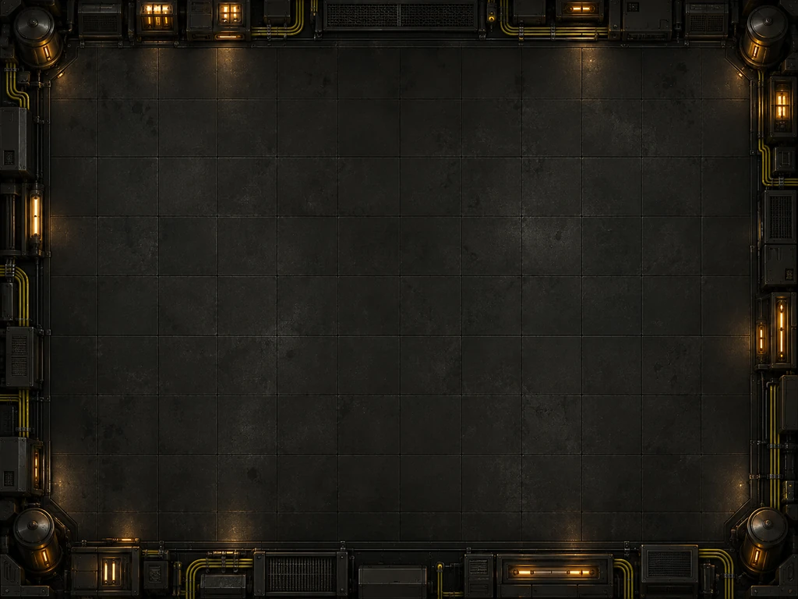

01 / QUICK START
从第一个节点开始
观察 A 与 B 的顺序，走近节点并交互。找到三枚标记后，前往右上角出口。无需账号，声音默认关闭。
02 / CONTROLS
操作就在手边
- 移动
- 点击地图 / WASD / 屏幕方向键
- 交互
- E / 屏幕“交互”按钮
- 暂停
- Esc；离开标签页自动暂停
这里保留旧世界页面的访问入口。游戏在频率密室中继续；如果暂时打不开，可返回游戏中心。进度与成绩保存在当前站点、当前设备。

01 / QUICK START
观察 A 与 B 的顺序，走近节点并交互。找到三枚标记后，前往右上角出口。无需账号，声音默认关闭。
02 / CONTROLS
这里保留旧世界页面的访问入口。游戏在频率密室中继续；如果暂时打不开，可返回游戏中心。进度与成绩保存在当前站点、当前设备。